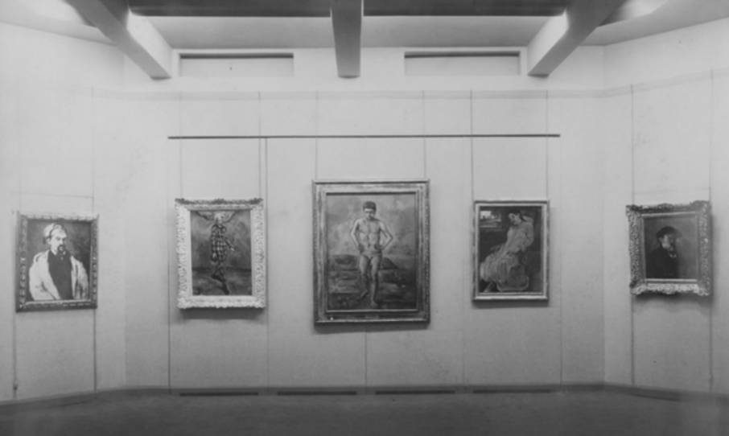
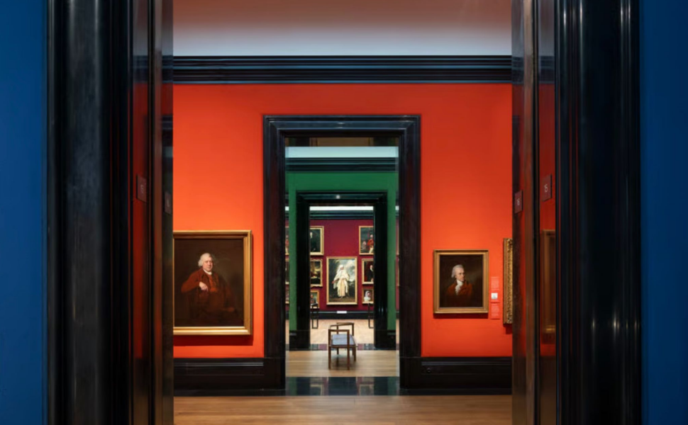
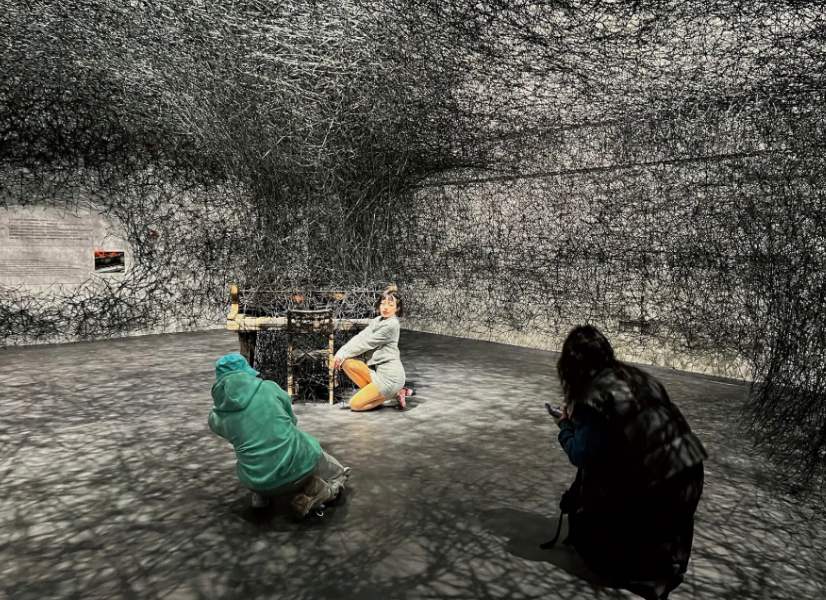
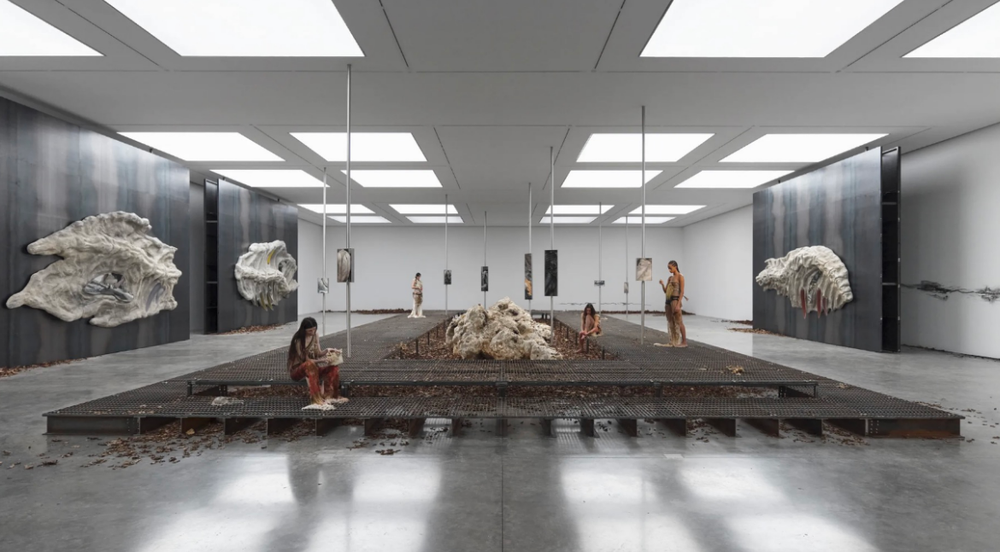
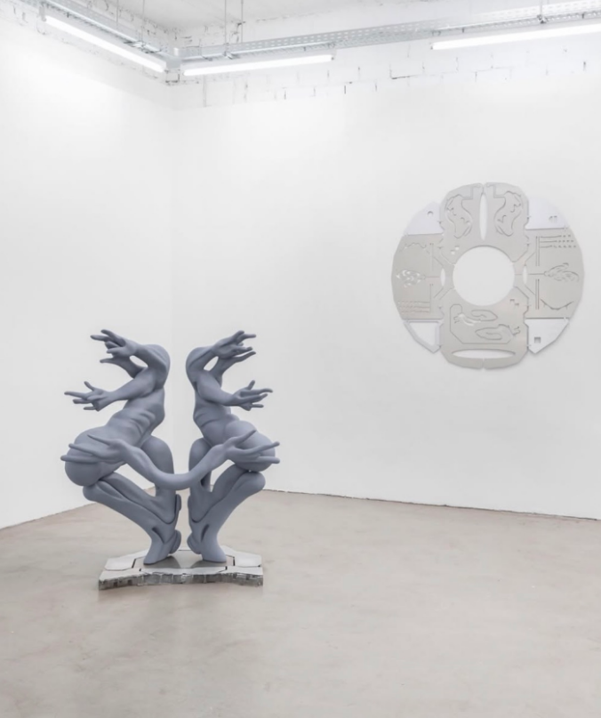
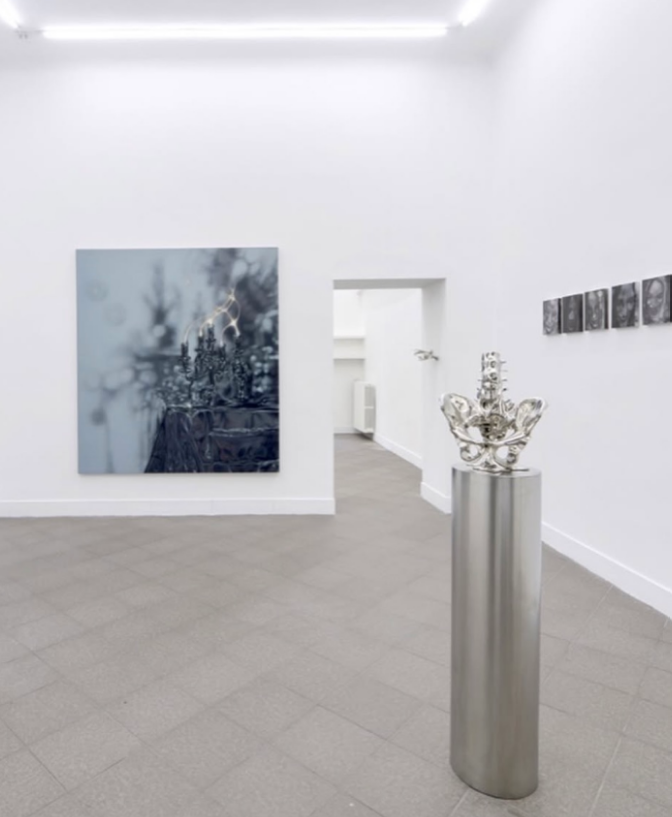
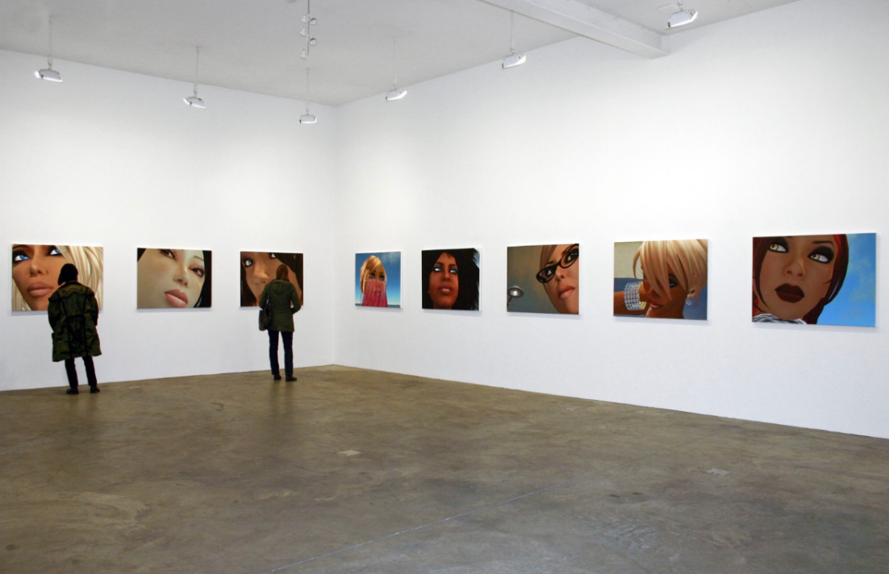
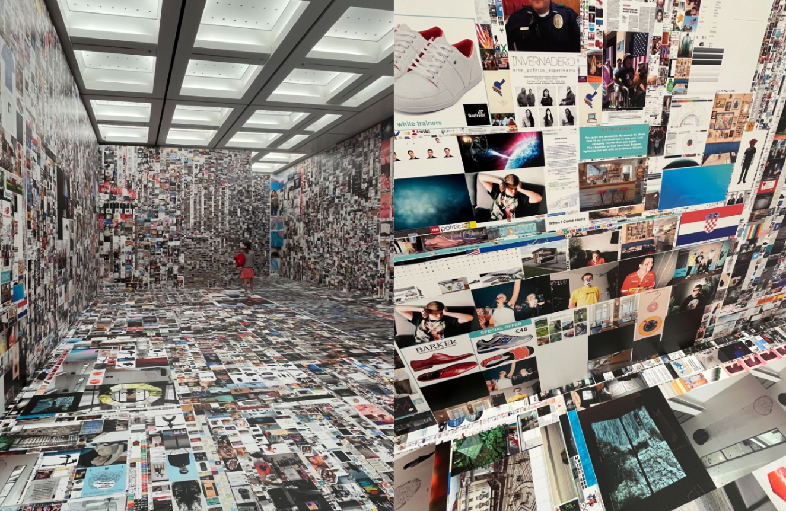

ANXIOUS CURATING: THE DUALITY OF IMAGEWhite Cube in the Age of Social Media
by Nina Wong
Introduction
After Pantone announced their 2026 colour of the year, Cloud Dancer – a variation of white – to be ‘a whisper of tranquillity and peace in a noisy world’ (Pantone, 2025), it immediately faced public backlash. Labelling the company’s decision as ‘tone deaf’ (Rufo, 2025) and a ‘clouded judgement’ (Donnell, 2026), Cloud Dancer was harshly taken as a lack of awareness of accessibility and current social and political affairs from a corporation. How is it that a neutral colour associated with minimalism and artistry is currently considered by some a sign of privilege and dissociation from chaos?In the early 19th century, then-private galleries were decorated with ornate furniture and fabric walls, rich and deep in colour, often in red, blue, or green. Silk and velvet fabrics were considered as luxury commodities, the dense colours and their tactile design thus signified immense wealth. Meanwhile, the hung paintings often depicted family portraits, historical events, or mythologies. Not hung, but directly anchored onto the expensive fabrics, the 19th-century galleries signified a collector’s exquisite taste and their inherited social status and wealth. The colour and the texture of the walls, accompanied by a gallery’s extravagant design, were an architecture of one’s social position. For a modern approach, London’s National Portrait Gallery displays its collection using a more linear method. Flattening the view by reducing wall textures, the wall colours become almost graphic design-like, emulating the opulence of the pictures and their frames through colour stories, each colour acts as a narrative signifier to what that time period ‘feels’ like. At present, with little personal relation to the extravagance of the 19th-century or before, these gallery spaces serve as a place of spectacle and education, becoming a public structure that functions more like a museum.
At the turn of the 20th-century, gallery spaces began to transform as art movements, interior designs, and studio practices evolved. According to Walter Grasskamp, the historical development of white cube galleries was parallel to the architectural trend of domestic structures such as hospitals, factories and schools (Grasskamp, 2011). By acknowledging that using Pure White in galleries was a sign of societal and cultural development, the white wall itself can be interpreted as a community with common ideas and assumptions (O’Doherty, 1986). Strategically, Pure White worked as a decontextualization tool. Experimenting on the European collection, the founding director of the Museum of Modern Art (MoMA), Alfred Barr Jr., presented a series of then politically radical paintings by lining them on beige monk’s cloth – a type of loosely woven cotton fabric with a beige hue – to make it more palpable for American audiences (Moma.org, 2016). By separating art from politics, the images are sterilised, making the white gallery an ideological space to ensure the timelessness of a work and for viewers to contemplate a work’s masterfulness. Yet, since the popularisation of white walls and their accompanying minimalist visuals in both domestic and commercial spaces over the last decade, this aesthetic has taken on new meanings under the parallel acceleration of urban population density and internet development. The illusion of a well-lit white space began to have negative correlations. With the urban environment surrounded by minimalist architectures and their office interiors brightly lit, trending phrases such as ‘Corporate Grey’, ‘Clean Girl Aesthetic’, or ‘Sad Beige Mum’, which are widely used on the internet, have revealed a critical generational anxiety in a post-internet social media.

View of MoMA’s first exhibition, Cézanne, Gauguin, Seurat, Van Gogh. November 7, 1929–December 7, 1929. The Museum of Modern Art Archives, New York. Photo: Peter Juley (Moma.org, 2026)

Wall colours of the National Portrait Gallery’s pre-20th-century collection. (Luke, 2023)
Technology Development and China’s Influencer Culture
The first 10 years of the internet were characterised by its centralised system with the primary goal of sharing information, and users were solely consumers. With the rise of social media around the mid 2000s, the internet became a read-write platform where information is generated and shared among users. Around the same time, microblogging platforms such as Tumblr and Pinterest – a space for lifestyle moodboarding, creative expression, and to explore niche – became a foundation for content creators to build their community on.Etymologically, a curator’s role was to look after civil resources. Later, taking on the meaning of ‘to care for’ or ‘to heal’, the curator worked as a caretaker of artefacts. Today, the role spans from manager to overseer of a collection. Meanwhile, the rise of e-commerce allowed content creators to leverage social media as a means to influence consumer opinions or create brand awareness. This system of operation then brought forth a new type of curator, the social media curator. Their role is to manage the content creators’ (which quite often can also be themselves) online presence by monitoring trends, organising the aesthetic of the content, and selecting relevant information to present for their target audience.
With social media users catching on to the opportunity of leveraging their personal images, the user interface on these platforms is now minimised to systematically sort through information. Organising content in grid form and increasing engagement specificity through algorithmic curation by directing audiences to explicitly relevant content, this strategic decision on how information is shown to a user can be seen across all technological developments, the most noticeable design shift being the flattened user interface design on the iPhone 5s starting from 2013.
This change in visual language silently marked a shift in aesthetic appreciation across generations, now commonly and sometimes satirically known as the Millennials-Gen Z generational gap.
Nearly 30 years into its growth and two generations nurtured, social media is now an omnipresent part of everyday life. With these platforms being an essential tool for business or communication, consistently generating homogenised content, visual cultural critics argue that in an age of aesthetic numbness, authenticity can only be realised through the embrace of eccentricity – also known as ‘embracing cringe culture’ online – (Medieval Mindset, 2026) and awareness of infrastructural weaknesses (Healey, 2026).
Galleries are also facing the predicament of authenticity. In Notes on the Gallery Space, O’Doherty stated that ‘the history of modern art can be correlated with changes in that space…’ modern audiences have now developed a habit where ‘... we see not the art but the space first’ (O’Doherty, 1986). This need for spatial aesthetics is equally prevalent as it is urgent in the age of social media. At present, aesthetics does not stop at consuming the space, but it is also disciplining the viewer within the space, instructing one to dress or act accordingly.
In China, a cultural phenomenon called DǎKǎ (打卡) is redefining the gallery experience. Translated literally as ‘punching-in’, an act where you register the exact time when you start and leave a paid work shift, DǎKǎ is a practice of discovering unexposed photogenic locations or visiting already viral locations to share a user’s proof of presence on social media. By revealing ‘hidden’ spots, the user gains validation through their aesthetic taste and receives content engagement, which can lead to potential brand opportunities in tourism or product advertisement by commission. The act of visiting viral locations according to ‘guide’, ringing true to ‘punching-in’, prioritise aesthetic evidence over experience by visiting the said location and taking an exact viral photo in the same camera angle as the others. Behind this specific cultural practice is China’s rapid e-commerce development. Unlike Western influencers whose followings are mostly built on trust and long-term brand partnerships, China’s influencers are termed as WǎngHóng (网红), also known as Key Opinion Leader (KOI) – an individual who holds significant sway in a specific industry. These KOIs are able to generate revenue by directing suburban consumers to the urban or other designated locations that aim to develop. Thus, an economical coexistence between China’s social media users and beautiful photogenic spaces is established through DǎKǎ culture. Within this ecosystem, galleries became the top choice for WǎngHóng to generate content due to their ‘cool and aesthetic’ nature.
In recent years, the Power Station of Art (PSA), Shanghai’s Long Museum, West Bund Museum, and Beijing’s 798 Art Zone have been some of the must-visit hot spots for WǎngHóng to showcase their lifestyle as trend setters. Within these spaces, the smooth and passive gallery surface signified a late capitalistic language that eliminates negativity, friction, and resistance (Han, 2017). The white and neutral space becomes a place for ‘positivity’ and immediate consumption, completely devoid of intellectual stimulation. Here, O’Doherty’s statement on ‘space over art’ has reached its pinnacle. Artworks are no longer the topic of focus, but rather which museum or gallery has the best backdrop to ‘punch-in’: neutral-toned exhibitions are favoured over colourful ones as they can emphasise the carefully sought through outfit of the person being photographed. Under this cultural context, Pure White became a selfie museum for China’s DǎKǎ practitioners. Whereas O’Doherty’s critique of the white cube gallery's unwelcomingness towards space-occupying bodies revealed the nature of the uneasy spectator at an artificial space constructed for commercial purposes, the WǎngHóng took advantage of the artificial Pure White by completely occupying the gallery spaces with their fashion and presence. China’s DǎKǎ culture has transformed the nation’s urban spaces into sites to recreate viral aesthetics. Here, the Pure White is complicit with its architectural partners. As galleries design their spatial flow to accommodate an iPhone’s lenses, becoming a site for hyper-consumption, the viewer transforms from an ‘uneasy spectator’ to content labourer, ensuring the entire encounter is documented, uploaded, and converted into social media posts for validation.

A person posing at Shiota Chiharu’s exhibition, The Soul Trembles, at Shanghai Long Museum. (Coville, 2022)
The 'Neutral Crisis'
On Instagram, many accounts share selected documentation of international exhibitions, all of which bear a striking similarity on their preferences for artwork and spatial aesthetic. Using O Fluxo (@ofluxoplatform) and Saliva Live (@saliva.live) as examples, these accounts target the same demographic who are familiar with Tumblr or Pinterest. However, compared to the community building and self-expression features Tumblr and Pinterest have, O Fluxo and Saliva Live have a post-internet aesthetic where a neutral-toned space is accompanied by equally neutral-toned objects of a specific organic shape. These shapes, all resembling Metal band fonts and mycelium, revealed an evolutionary iconography from the internet during the 2019 pandemic. In that year, isolation led many to start searching for communities online using social media in an unprecedented way. Gatherings such as raves or parties were streamed through Twitch, YouTube Live, or Zoom. To make up for the lack of physical presence, many organisers held chat rooms on 3D virtual social networking platforms such as IMVU, Club Cooee, or Roblox. Not only did this form of remote participation contribute to game development’s online multiplayer function, but the reminiscing of ‘a time when things were better’ brought forth a discussion of the past niche. The alchemical combination of emotional release, self-help through ritual practice, and nostalgia popularised music genres such as Hyperpop and Digicore. The graphics for these genres often have Metal fonts with artificial chrome texture, an appropriate visual for the music’s emotional lyrics and synthetic textures. The exhibition style seen on O Fluxo or Saliva Live is a byproduct of this cultural happening, stemming from further exploration of digital environments by collaging the idea with organic, earthy textures.The same year, Pantone announced its upcoming colour of the year as Classic Blue. ‘Instilling calm, confidence and connection…’, the company continued to describe this colour as ‘...enduring, highlights our desire for a dependable and stable foundation on which to build as we cross the threshold into a new era’ (Pantone, 2019), hinting at the rippling internet-centric cultural shift. With Classic Blue resembling a dusky Royal Blue, the neutral tone of Cloud Dancer that shares the same message of serenity as Classic Blue appeared lacklustre in comparison.
Currently standing at a bottleneck stage of content creation, the white space surrenders to the overstimulation of information. In his essay Context and Content, O’Doherty wrote that ‘the spotless gallery wall is in the image of the society that supports it…’ and that ‘... the white wall is our assumptions’ (O’Doherty, 1986). Assuming white to be the solution to clarity, the contemporary association of Pure White with ‘flat’ and ‘sterile’ offered a juxtaposing perspective where a decision for Pure White at a gallery space can become an apathetic assumption when exposed to a paralysing display of the smooth and neutral aesthetic on social media.
The white space also performs. On Instagram, a user’s mutual contact can see whether they ‘liked’ a post or not, it is shown between the image of a post and its caption as ‘Liked by [the user you follow] and others’. By publicly displaying that someone ‘liked’ a content, social media weaponised cultural capital (Bourdieu, 1986, ‘The Forms of Capital’. p.241-258), turning ‘like’ into a tug-of-war on a user’s curated identity by saying, ‘this is my niche, my aesthetic, and who I am’. Blue-chip galleries like White Cube also took on the post-pandemic aesthetic with their recent exhibition at Bermondsey, London. Titled Echo, Klára Hosnedlová’s solo show presented a scenic collection of large objects, industrial structures, and embroideries. Within the stark white space, fungal-like objects were situated on and within unevenly heat-treated steel structures. At the centre, small embroidered pictures sat within steel frames, each fixed onto a spotless metallic pole. The combination of organic and industrial textures, accompanied by the space’s musky tone, painted an abandoned landscape. Performers wore distressed outfits with fabrics made from organic materials, wandering around and inside the works. A threshold of ‘who is leading who’ presented itself through the collage of textures, yet the embroidered pictures suggested otherwise. At the heart of these industrial structures, supporting and surrounding, there lies the craft of human hands. Aesthetically symmetrical and the neutral colours pleasing to the eye, the beautifully styled performers became a part of the space. It was irresistible not to take photos of Echo and post them online. On a Saturday morning, a man e-scootered to the gallery. In a simple beanie, wide-leg trousers, and a Carhartt jacket, he strolled into the White Cube gallery. A few seconds later, some chatter followed. Two women in beige blouses and black skirts cheerfully walked in with a selfie stick in one hand.

Echo at White Cube Bermondsey. (White Cube, 2026)

An exhibition in Germany. 2026. Posted by Saliva Live (@saliva.live). Note: The same exhibition was also selected by O Fluxo (@ofluxoplatform) and posted on their account.

An exhibition in Milan. 2026. Posted by O Fluxo (@ofluxoplatform).
The Duality of Image
In his essay Travels in Hyperreality, Umberto Eco went across America, visiting themed parks and cities. By comparing hyperrealistic art to these landmarks, Eco presented a cultural scenario where people preferred ‘Absolute Fake’ over reality (Eco, 1986). The post-internet shares a similar trait on the fetishisation of the artificial. Artist Eva and Franco Mattes (a.k.a. 0100101110101101.ORG) took portraits of 13 avatars whom they encountered on Second Life, a 3D virtual social platform, and exhibited the portraits in the platform’s virtual gallery, Ars Virtua, in collaboration with Rhizome (Rhizome, 2006), titled 13 Most Beautiful Avatars. These portraits were later physically exhibited in high-resolution prints at New York’s Portmasters Gallery in 2007 under the same title. In Second Life, a user’s avatar is highly customisable and can take on infinite appearances, from fantasy creatures to inanimate objects. Here, all 13 subjects were in the appearance of a human, sharing a similar resemblance in their Western hair style, proportionate facial features, and smokey eye makeup (if it was a female). If hyperrealism is a practice of creating ‘absolute fake’ in reality, 13 Most Beautiful Avatars presented the post-internet search for ‘absolute real’ in the digital space. The presentation of artificial subjects in a Pure White gallery maximally synthesised the space. When analysing the effect of frame, O’Doherty stated that ‘there is no suggestion that the space within the picture is continuous with the space outside the picture’ (O’Doherty, 1986). In 13 Most Beautiful Avatars, the space within the picture is artificial, mounted on the wall without a physical frame, and the picture extends to an equally artificial wall. Nothing realistic lies outside of the picture’s edges for it to decompose. The gallery’s artificial existence thus became a part of the work’s composition, the only anomaly here is the viewer, physically occupying an executed ‘fake’ space to be studied further.At Tokyo’s National Art Center exhibition in 2024, Universal / Remote, a room was completely covered by wallpaper. Titled Since You Were Born, the wallpaper provided a view into the artist Evan Roth’s four-month-long internet browsing history, dated from the day his second daughter was born (Evan-roth.com, 2024). The viewer was engulfed with images of advertisements, news, family photos, and pop culture references. Here, the artificial points not to fetishisation, but its omnipresence, Roth’s wallpapered room was a realistic psychological architecture of saturated information. By looking at and being inside these walls, the viewer was confronted by a chaotic collage of untemplated clutter. Rejecting the assumption of the white space and its purpose to reduce distraction, Since You Were Born reversed the colour narrative of Pure White by maximising information, creating relevancy to the current social media anxiety. Meanwhile, it invites the viewer to slow down their steps by looking closer into each image, encouraging the deduction of the artist’s online identity by looking at his personal browsing history.
In recent years, a new popular term describing the act of compulsively consuming social media came up, called ‘Doomscrolling’. With information becoming increasingly accessible, social media can induce serious stress and anxiety for young users who are compelled to build an online identity. However inconsequential, in a world of constant flux and instability, commodifying one’s personal image became an economically rational imperative to maintain control over the self and survival (Healey, 2026). Social media is the most accessible tool to increase one’s cultural capital, but its visibility – as mentioned in The ‘Neutral Crisis’ – is restraining how much authenticity someone can show online. This cautious tread between public engagement and the fear of ‘becoming cringe’ further cultivated aesthetic minimalism and in some cases, emotional minimalism, which can be noticed when a person acts unbothered or unhinged to maintain their image. Emotional vulnerability in a post-internet age thus became a scarcity, and having one’s digital footprint revealed can lead to endless consequences.
Almost two decades apart, social media’s narrative has shifted from read-only to read-write format between the making of 13 Most Beautiful Avatars and Since You Were Born. Exposing the gritty reality of our digital existence, Evan Roth’s act of turning the Pure White gallery into a monument of low-resolution noise helped capture the anxious lifestyle of doomscrollers in an age of information overload. Here, the artificial is no longer a polished lifestyle or fantasy like 13 Most Beautiful Avatars, but an ‘absolute real’ of the invisible weight each individual carries under an accelerating late-stage capitalism.

13 Most Beautiful Avatars at Postmasters Gallery (Anon, 2007)

Images of Since You Were Born. From my iPhone. Tokyo (Wong, 2024)
Beyond Pure White
Throughout the gallery's historical development, its walls and interior design have always aligned with cultural phenomena to reflect a commonly agreed ideology of a given period. From the 19th-century salon – both saturated in colour and rich in texture – that represented elite taste and the lineage of wealth, to the early to mid-20th-century institutionalised white space as a method to decontextualise political language, forming a neutral and commercial atmosphere to get rid of distraction. However, under the current age of social media where information is oversaturated, Pure White is beginning to have correlations to ‘corporate’ or ‘anxiety-inducing’ due to its clinical design. Under the internet context, some neutral-toned trendy aesthetics in response to Pure White have also become a subject for cultural criticism.Through the lens of social media and cultural development, O’Doherty’s ‘uneasy spectator’ has now taken the role of a content labourer, using the spotless white gallery to generate an aesthetic and minimalist lifestyle for the gids of social media. Contemplation is reduced as the gallery becomes a smooth and passive backdrop for the camera. From the loss of tension and assumption of a gallery’s timelessness, a white space becomes ‘out of touch’, as reflected by Pantone’s backlash after its announcement of Cloud Dancer. The public criticism on Pantone’s choice as ‘tone-deaf’ marks a critical point where a generation is rejecting institution and corporate escapism. In a world currently defined by climate urgency, political tension, and anxiety of doomscrolling, the idea of a ‘whisper of calm’ no longer exists, instead, it is perceived as an aesthetic for denial and a method to sterilise vulnerabilities of the individual.
It is worthwhile to reconsider the persistence and assumption of Pure White in the age of social media. No longer a necessity for decontextualisation or clarity, the white space is now a curatorial paralysis in fear of friction. By painting a wall with a non-neutral colour, or having it completely covered like Since You Were Born, requires a conscious stance, forcing the institution to acknowledge that art stems from a continuous relationship with the chaotic reality outside of the white space. The contemporary gallery is currently at a pivotal point where the consideration for an information-overloaded generation, infrastructure critique, and emotional honesty needs to be taken into account and adapted. As a site of cultural encounter, the white space should move beyond Pure White by building a space that invites the saturated, low-resolution, and imperfect colour stories of our collective reality.
List of References
Bourdieu, P. (1986). Handbook of Theory and Research for the Sociology of Education. New York: Greenwood Press, ‘The Forms of Capital’. p.241-258.
Donnell, C.M. (2026). Clouded judgment? Why Pantone’s colour of the year is causing controversy. [online] the Guardian. Available at: https://www.theguardian.com/fashion/2026/jan/08/clouded-judgement-why-pantones-colour-of-the-year-is-causing-controversy. [Accessed 2 May 2026]
Eco, U. (1986). Travels in Hyper Reality: Essays. Translated by W. Weaver. Sandiego, New York, London: Helen and Kurt Wolff Book.
Evan-roth.com. (2024). Evan Roth. [online] Available at: https://www.evan-roth.com/~/works/since-you-were-born/#hemisphere=east&strand=132 [Accessed 26 May 2026].
Grasskamp, W. (2011). The White Wall - On The Prehistory Of The ‘White Cube’. On-Curating.org, (9/11), pp.78–90.
Han, B.-C. (2017). Saving Beauty. Translated by D. Steuer. John Wiley & Sons.
Healey, E. (2026). AI did not invent slop. It’s a defining aesthetic of modern life. Instagram. Available at: https://www.instagram.com/p/DX8H62wAj6y/ [Accessed 7 May 2026].
Healey, E. (2026). Eugene Healey on Instagram: ‘The analog lifestyle is an inaccessible fantasy. Today: examining the reality behind our offline aspirations - how the personal brand turned logging off into a luxury, and why we can’t use social media as a scapegoat. [online] Available at: https://www.instagram.com/reel/DTyys3FDMXe/?igsh=MTZjZ3czemhpaW90OA== [Accessed 7 May 2026].
Medieval Mindset (2026). Wait, Is The World Getting Less Ugly? [online] YouTube. Available at: https://www.youtube.com/watch?v=GjmNY0J8qac [Accessed 20 April 2026].
Moma.org. (2016). MoMA | Small Steps Lead to Bigger Changes: MoMA’s Shifting Wall Colors. [online] Available at: https://www.moma.org/explore/inside_out/2010/03/11/small-steps-lead-to-bigger-changes-moma-s-shifting-wall-colors/. [Accessed 26 May 2026]
O’Doherty, B. (1986). Inside the White Cube: The Ideology of the Gallery Space. 1st ed. Santa Monica, San Francisco: The Lapis Press.
Pantone (2019). Color of the Year 2020. [online] www.pantone.com. Available at: https://www.pantone.com/uk/en/articles/color-of-the-year/color-of-the-year-2020. [Accessed 26 May 2026]
Pantone (2025). [online] Pantone. Available at: https://www.pantone.com/uk/en/color-of-the-year/2026. [Accessed 26 May 2026]
Rhizome (2006). 13 Most Beautiful Avatars. [online] Rhizome. Available at: https://rhizome.org/editorial/2006/dec/1/13-most-beautiful-avatars/ [Accessed 4 Mar. 2026].
Rufo, Y. (2025). Blank canvas or tone-deaf? Pantone’s white Colour of the Year sparks backlash. BBC News. [online] 20 Dec. Available at: https://www.bbc.co.uk/news/articles/c9w7qg2grq4o. [Accessed 2 May 2026]
List of Images
Anon, (2007). 13 Most Beautiful Avatars < Eva & Franco Mattes. [online] Available at: https://0100101110101101.org/show-13-most-beautiful-avatars/.
Colville, A. (2022). Photo Shop: Art in the Age of the Influencer. [online] The World of Chinese. Available at: https://www.theworldofchinese.com/2022/05/photo-shop-art-in-the-age-of-the-influencer/ [Accessed 29 April 2026].
Instagram. (2026a). O Fluxo on Instagram: ‘SUBMISSION: WHEN THE FEED ENDS Group exhibition by #AnniWu, Milan May 04 — June 06, 2026 Artists: #AnastasiaCalinovici, #MartaMattioli and #RaduPandele Full documentation available on ofluxo.net web platform: ➔ ofluxo.net/when-the-feed-ends-group-exhibition-anni-wu-milan/ @anniwugallery @anastasya.asdf @mattioli.marta @pandelepandele @edo_durante #ofluxoplatform @ofluxoplatform’. [online] Available at: https://www.instagram.com/p/DYo2KeQCvXq/?img_index=1 [Accessed 27 May 2026].
Instagram. (2026). Saliva Live on Instagram: ‘Title: Call Me We Artist: lom-of-LaMa Duration: 27 Feb ― 27 Mar 2026 Venue: SUPERRAUM (Dortmund, Germany) Photography: lom-of-LaMa AI Summary: The show investigates identity, empathy, and social dynamics, blending analog and digital methods to create shared, mutable expressions that challenge hierarchies and foster mutual understanding. @lom_of_lama @dortmundkreativ The complete documentation of the exhibition is available on saliva.live web platform. https://saliva.live/exhibitions/dfb65f9a’. [online] Available at: https://www.instagram.com/p/DYhyCgwjdKO/?img_index=1 [Accessed 27 May 2026].
Luke, B. (2023). The new National Portrait Gallery: more democratic and diverse, it has never looked better. [online] The Standard. Available at: https://www.standard.co.uk/culture/exhibitions/new-national-portrait-gallery-reopening-review-tracey-emin-b1088883.html. [Accessed 2 May 2026]
Moma.org. (2016). MoMA | Small Steps Lead to Bigger Changes: MoMA’s Shifting Wall Colors. [online] Available at: https://www.moma.org/explore/inside_out/2010/03/11/small-steps-lead-to-bigger-changes-moma-s-shifting-wall-colors/. [Accessed 26 May 2026]
Wong, N. (2024). Images of Since You Were Born. From my iPhone during my trip to Tokyo.
White Cube. (2026). Klára Hosnedlová, Bermondsey (2026). [online] Available at: https://www.whitecube.com/gallery-exhibitions/kl%C3%A1ra-hosnedlov%C3%A1-bermondsey-2026. [Accessed 2 May 2026]